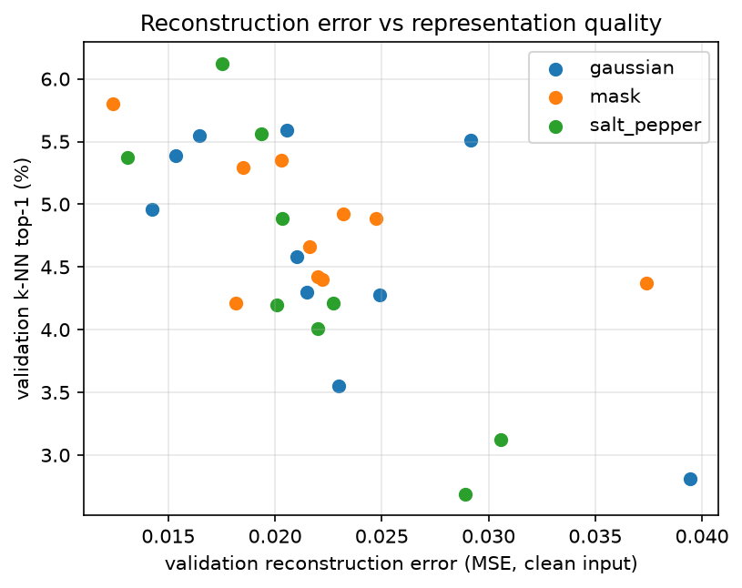
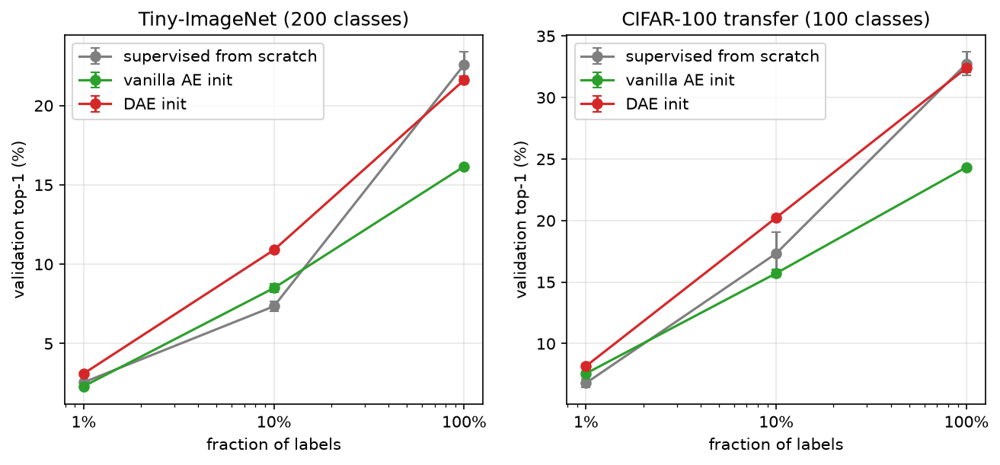
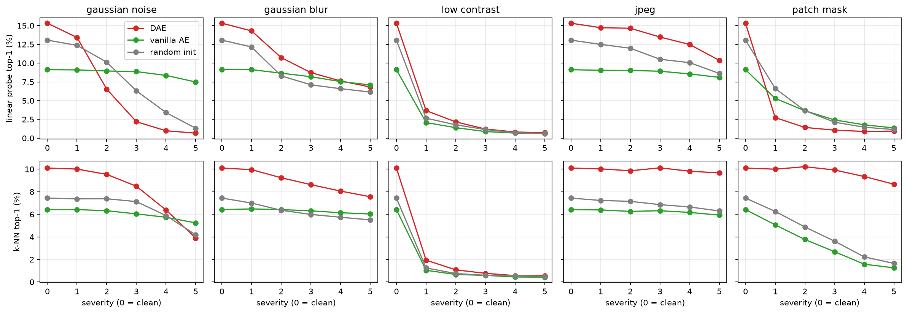
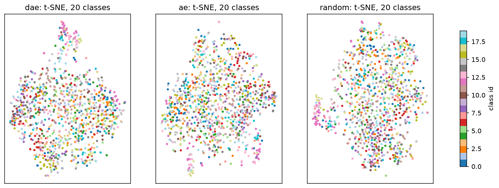
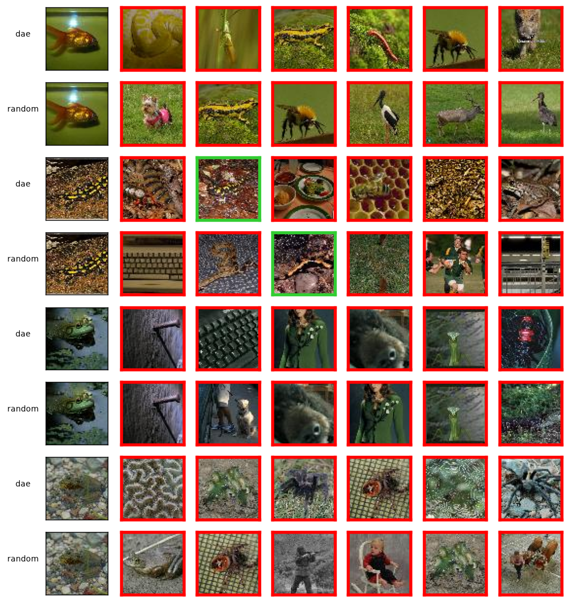

midterm/ folder of the course fork; every run is python train.py --config <yaml>, seed 42.Data and protocol. Tiny-ImageNet (200 classes, 64×64). Pre-training never uses labels. Of the 100k training images, 50 per class (10k) are held out as the validation split for all tuning and model selection; the other 90k are the train set and the k-NN bank. The official validation split (10k) is the test set and is used only for the final numbers. Frozen encoders are scored with a weighted cosine k-NN (k = 20, similarity temperature 0.07) and a linear probe on standardised cached features (Adam, lr 1e-3, weight decay 1e-4, 50 epochs, mean of 3 probe seeds). Fine-tuning trains all weights on 1%, 10% and 100% of the labels, using class-balanced nested subsets that are identical for every model (3 seeds; 300/100/30 epochs; encoder lr 1e-4 when pre-trained and 1e-3 from scratch, head lr 1e-3). The transfer set is CIFAR-100 upsampled bilinearly to 64×64 (45k train, 5k hold-out, official 10k as test), with the Tiny-ImageNet encoders left as they are. Top-1 and top-5 are reported.
Model. The course small encoder, adapted to 3×64×64: Conv(3→32, s2)-ReLU-Conv(32→64, s2)-ReLU-Flatten-Linear(16384→d), no batch norm. The decoder gφ mirrors it (Linear, two transposed convolutions, sigmoid output) and is discarded after training. The denoising autoencoder minimises, for a clean image x and a corrupted copy x̃ ~ q(·|x),
with Adam. Corruption is applied in training only. Validation reconstructs clean images from clean images, so reconstruction error is comparable across trials. Corruption strength 0 gives the vanilla AE baseline: the same network and recipe without the denoising task.
Which layer is h. We use the conv feature map after the second ReLU, average-pooled to 4×4 (1024-d), and not the d-dimensional Linear bottleneck. This is our own choice and a deviation from "the encoder output", so both are reported in Table 1. The bottleneck is trained to be a code the decoder can invert, and it is one linear step from the pixels; the conv map is where the encoder has already built local features. We picked it on validation: for the DAE it raises k-NN from 6.5% to 10.1% and the probe from 7.3% to 15.3%, and it does the same for the random encoder, so part of the gain is the architecture and not the training (the random-init row is there to show that). The conv map has to be pooled because the raw map is 16384-d.
Tuning. Random search with 30 trials (29 distinct; trial 10 repeats trial 2) over five hyperparameters, in a proxy setting (25% of the train set, 20 epochs), selecting by validation k-NN top-1 and logging validation reconstruction error. Random search covers more values per hyperparameter than a grid at the same cost. The three best trials were repeated with two more seeds, because one seed on 10k images moves k-NN by about ±0.3 points, more than the gap between the top trials. The final model is trial 15 (mask 0.30, d = 512): 5.76 ± 0.05% over 3 seeds, against 5.60 ± 0.66% (trial 2) and 5.39 ± 0.20% (trial 8). It was then trained at full size (90k images, 100 epochs).
| hyperparameter | search range | chosen |
|---|---|---|
| fixed | batch 256, Adam, 16-bit mixed precision, proxy = 25% of train and 20 epochs, full = 100% and 100 epochs, seed 42 | |
Does better reconstruction mean a better representation? Only loosely. Across the 29 distinct proxy trials, lower validation reconstruction error goes with higher k-NN (Spearman ρ = −0.62), but the trial with the lowest error (trial 15, MSE 0.0124) is not the one with the highest k-NN (trial 2, 6.1%), and the top five trials sit within about 0.6 points of each other, which is the size of seed noise (Fig. 1, left). Reconstruction error also rises with corruption strength by construction, so part of the correlation comes from how the trials were drawn. For this reason we selected on k-NN.


| model | h | Tiny-ImageNet | CIFAR-100 (transfer) | ||||
|---|---|---|---|---|---|---|---|
| k-NN @1 | probe @1 | probe @5 | k-NN @1 | probe @1 | probe @5 | ||
| start | Tiny-ImageNet top-1 | CIFAR-100 top-1 | ||||
|---|---|---|---|---|---|---|
| 1% | 10% | 100% | 1% | 10% | 100% | |
Better than what, and by how much? The DAE is better than all three baselines, but modestly in absolute terms. Frozen, on Tiny-ImageNet, the pooled-conv DAE beats a random encoder by +2.7 points k-NN (10.1% against 7.4%) and +2.3 points probe (15.3% against 13.1%), and the vanilla AE by +3.7 and +6.2. The vanilla AE is worse than a random encoder on this layer (6.4% against 7.4% k-NN): training for plain reconstruction made the pooled features less useful than none. Only with the denoising task does the training help. With few labels the DAE is the better starting point: at 10% of the labels it reaches 10.9 ± 0.1% against 7.4 ± 0.3% from scratch (+3.5 points; 8.2% for scratch after a learning-rate and weight-decay search, which still leaves a 2.7-point gap), and at 1% it reaches 3.1 against 2.6. With all labels the advantage is gone: scratch is higher (22.6 ± 0.8 against 21.6 ± 0.2), and a vanilla-AE start is clearly worse (16.2). Absolute accuracy is low because the encoder is small and has no batch norm.
Do the three protocols rank the models the same way? The frozen ones do: on the pooled layer k-NN and probe both give DAE > random > vanilla AE, on both datasets. Fine-tuning ranks them differently: the vanilla AE beats scratch at 10% labels (8.5 vs 7.4) and loses to it at 100% (16.2 vs 22.6), so its ordering depends on the label budget. On the 512-d bottleneck of CIFAR-100 k-NN and probe disagree about the vanilla AE and random (k-NN prefers the AE, 20.7 against 18.2; the probe prefers random, 21.9 against 17.2). A probe can re-weight feature dimensions and k-NN cannot, so a representation whose useful signal sits in low-variance directions favours the probe. We did not test this explanation.
Where does it fail? Classes: 21 of 200 classes get 0% k-NN accuracy (35 for the vanilla AE, 25 for random), and the best ones reach 34–48%. Nearest-neighbour retrieval (Appendix) returns images that share colour, texture and background with the query and rarely the object, and t-SNE of 20 classes shows no class clusters. The DAE has learned low-level appearance, not object identity. Corruptions (Fig. 3, validation split, probe trained on clean features and then frozen, identical damaged images for every encoder): low contrast removes nearly all accuracy for every model, even at the mildest level (probe 15.3% to 3.7%). Blur and JPEG degrade the DAE gently. Additive noise and patch masking break the DAE's probe (patch masking at severity 1, 10% of patches, takes it from 15.3% to 2.7%, below a random encoder) while its k-NN stays at 10.0 to 8.7% under masking, where the other encoders fall to 1–2% at the harshest level. The embeddings keep their class structure; the probe fails because the features move. Under 10% masking the DAE's pooled features shift by 4.3 clean standard deviations per dimension (vanilla AE 0.04, random 0.19) while their direction is unchanged (cosine to the clean feature 0.99), which cosine k-NN ignores and a probe fitted on clean features does not. The DAE is trained only on masked inputs, so clean images are slightly off its training distribution. Noise is explained only in part by this (a 0.15 s.d. shift, but the probe still drops to 6.5%). Domains: on CIFAR-100 (upsampled from 32×32) the DAE keeps its lead over random (probe 30.6% against 27.3%, k-NN 24.3% against 20.1%), but a random pooled-conv encoder is already strong there, so most of the transfer score is architecture.
Evidence and limits. Checks that support the numbers: a probe trained on shuffled labels scores at chance (0.4–0.5%), so it does not leak labels; the label-efficiency gap holds over 3 seeds and against a tuned scratch baseline; random and vanilla AE baselines are on the same layer. Limits: one pre-training seed per model; the layer, the search space and the top-3 repeat were chosen on the same validation split (the test split was used once); the proxy search is noisy (±0.3 to 0.6 points); the CIFAR images are upsampled, so the transfer test also measures the resize. What we would test next: a probe trained on corrupted features to see whether the gap in Fig. 3 closes; a corruption-matched training mix; a deeper encoder with batch norm; and the contrastive objective of Part B on the same protocol.


